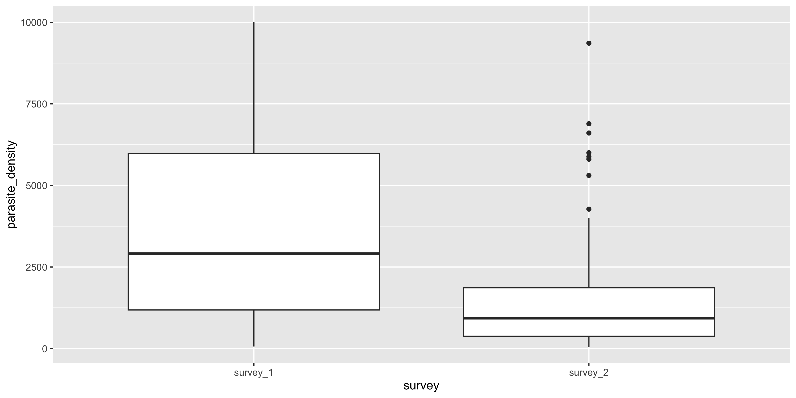
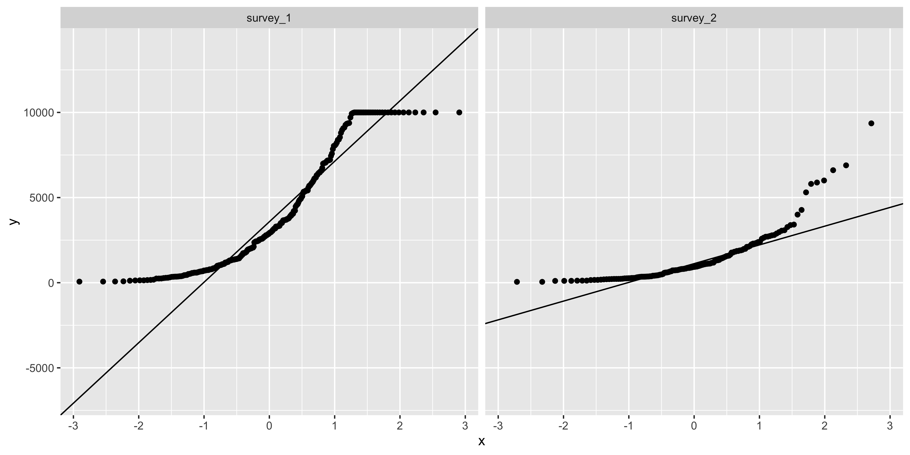
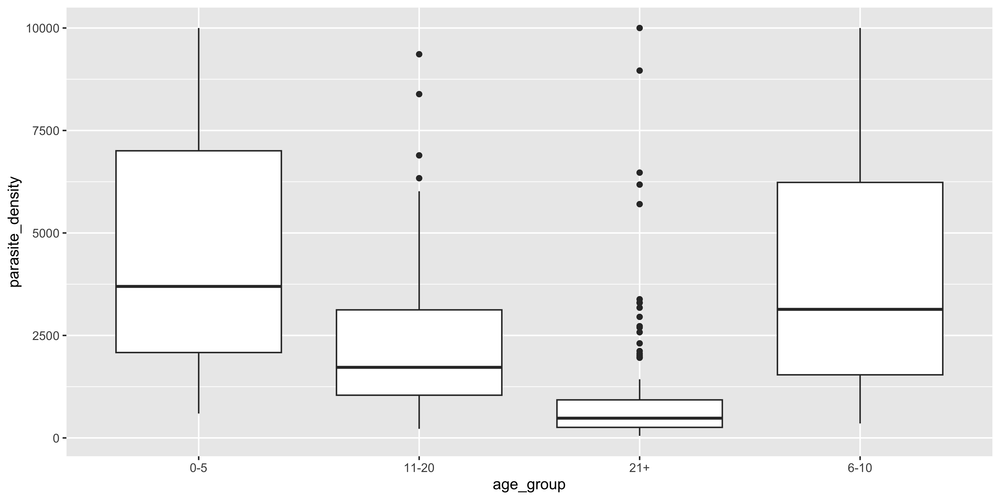
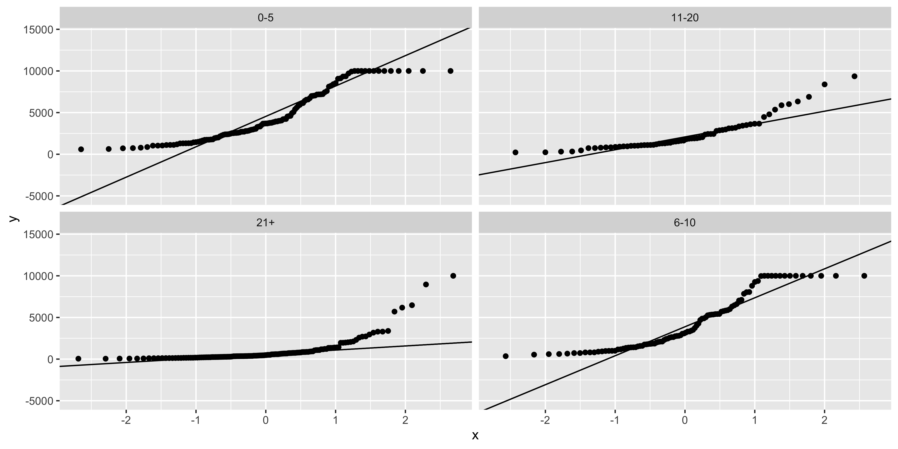
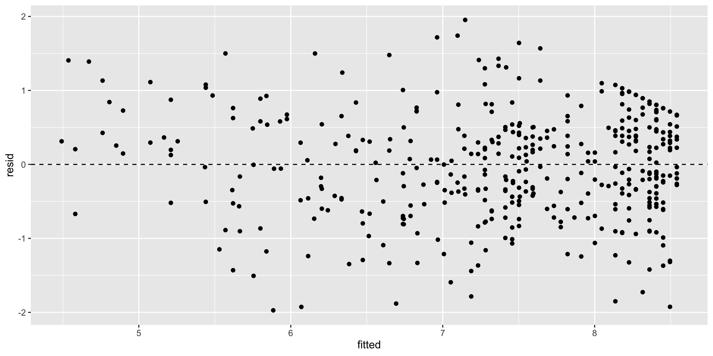
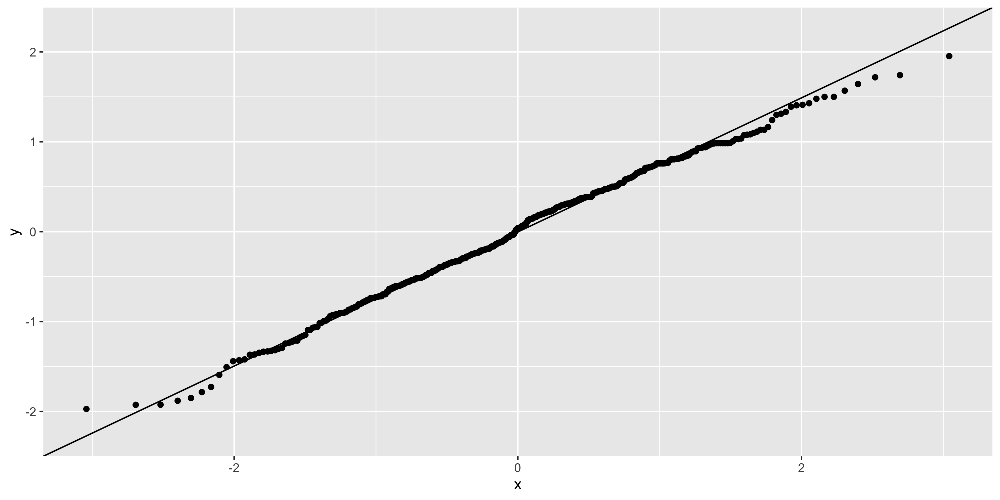

library(tidyverse)
participants <- read_csv(
"https://raw.githubusercontent.com/WEHI-Education/BIOL90042_R_Course/refs/heads/main/data/malaria_participants.csv"
)25 Tutorial 10: Applied Statistical Epidemiology with R
Following on from our statistics workshop where we learned how to identify and formally test patterns in our data, we will now learn how to apply this to epidemiological problems. We will start by analysing data from a hypothetical study to answer a public health research question.
TipLearning Objectives
At the end of this session, learners should be able to:
- Clean and prepare epidemiological data
- Estimate infection prevalence (the proportion of individuals in a population who are infected at a given time)
- Test for associations between categorical variables (chi-squared test)
- Choose between parametric (t-test, ANOVA) and non-parametric (Wilcoxon, Kruskal-Wallis) tests for a continuous outcome
- Fit a linear model and check its assumptions
25.1 Background
25.1.1 Epidemiology
Epidemiology is the study of diseases in populations. It is an extension or application of statistics and investigates the patterns of disease (e.g., infection or non-communicable) and other illnesses to help protect the health and safety of our communities.
Epidemiologists look at patterns, trends and data related to a disease or illness and can establish risk assessments or predictions of what to expect next. Epidemiologists use evidence and data to make informed decisions in public health.
25.1.2 Malaria and mass drug administration
Plasmodium falciparum malaria remains a leading cause of childhood mortality in sub-Saharan Africa. Artemisinin-based combination therapies (ACTs) are the first-line treatment for malaria. In our hypothetical scenario, substantial funding has recently been directed toward administering ACTs as a blanket strategy rather than reactive treatment of symptomatic cases — an approach called mass drug administration (MDA), where everyone in a population is treated regardless of infection status.
Other control tools include insecticide-treated bed nets (ITNs).
25.1.3 Study scenario
Researchers surveyed a village twice: survey_1, conducted just before an MDA program was rolled out, and survey_2, conducted in the same village about 12 months later, while the program was running. The same participants were seen in both surveys. At each visit, researchers recorded demographic information, intervention use, current infection status (by PCR) and parasite density.
Research question: Does MDA with ACT influence the burden of malaria?
We break this down into:
- Does it influence the prevalence of infection*?
- In whom (which age groups)?
- Does it influence the severity of infection (parasite density)?
**Note: The prevalence of infection is defined as the proportion of individuals in the population who are infected (in this case, with Plasmodium falciparum*) at a given time.
NoteExperimental design
Experimental design is a key component of epidemiology and is crucial in the types of questions that you can answer.
In this hypothetical scenario we have multiple cross-sectional surveys. Having surveys from before and during the intervention is much stronger than a single cross-sectional snapshot: we can ask not just “is prevalence lower during the program?” but “did prevalence fall after the intervention was introduced, and in whom?” This before/after comparison is the closest we can get to an experiment without randomising the intervention ourselves.
Other experimental designs might include randomised controlled trials, which are considered the “gold-standard”. Participants are randomly assigned to an experimental group (e.g. receiving the intervention) or a control group (e.g. receiving a placebo or standard care). But these are not always feasible in real-world settings. In this study, we’re using a quasi-experimental approach by comparing outcomes before and during the intervention.
25.2 The dataset
malaria_participants.csv contains one row per participant per survey with the following information:
id: identifier per personsurvey: survey that the information was obtained:"survey_1"(before MDA) or"survey_2"(during MDA)age: participant-identified agesex: participant-identified sexpcr_positive: 18S rRNA PCR result: 1 = currently infected, 0 = not infectedparasite_density: parasites per microlitre of blood (0 if PCR negative)act_use: artemisinin-based combination therapy provided to participant: 1 = yes, 0 = nobednet_use: slept under a bed net the previous two weeks: 1 = yes, 0 = no
You can analyse the data by either looking at one survey at a time (filter(survey == "survey_2")) or explicitly comparing the two surveys.
Let’s load in the tidyverse R package and dataset that we will be using!
25.3 Data preparation
Now that you’re experts in data cleaning and visualisation, work through the following exercises to inspect the data, filter for only rows that have observations for every column (i.e., all columns have non-missing values) and create an age group column for categorical-based analyses.
ImportantPractice exercise: Inspect the data
Look at the data frame. How many participants are there, and how many rows are there per survey? Check for missing values in each column of participants.
Solution
glimpse(participants)Rows: 1,800
Columns: 8
$ id <chr> "SUBJ0001", "SUBJ0002", "SUBJ0003", "SUBJ0004", "SUBJ…
$ survey <chr> "survey_1", "survey_1", "survey_1", "survey_1", "surv…
$ age <dbl> 38, 64, 32, 1, 25, 7, 61, 54, 20, 52, 65, 9, 47, 5, 4…
$ sex <chr> "Female", "Male", "Female", "Female", "Female", "Fema…
$ pcr_positive <dbl> 0, 0, 0, 0, 0, 1, 0, 0, 0, 0, 0, 1, 0, 1, 0, 0, 0, 0,…
$ act_use <dbl> 1, 0, 1, 0, 0, 0, 0, 0, 0, 1, 0, 1, 0, 0, 1, 1, 1, 0,…
$ bednet_use <dbl> 1, 1, 1, 1, 1, 1, 0, 0, 1, 1, 1, 1, 0, 0, 1, 1, 0, 1,…
$ parasite_density <dbl> 0, 0, 0, 0, 0, 5402, 0, 0, 0, 0, 0, 8055, 0, 3766, 0,…participants %>% count(survey) # 900 rows in survey_1, 900 in survey_2# A tibble: 2 × 2
survey n
<chr> <int>
1 survey_1 900
2 survey_2 900participants %>% summarise(across(everything(), ~ sum(is.na(.))))# A tibble: 1 × 8
id survey age sex pcr_positive act_use bednet_use parasite_density
<int> <int> <int> <int> <int> <int> <int> <int>
1 0 0 0 0 25 0 0 25Only pcr_positive and parasite_density have missing values (25 rows).
Note that here we used the glimpse() function which provides an overall summary of the dataframe, just like the base R str() function (which is what is shown in the environment panel).
ImportantPractice exercise: Complete-case analysis
Epidemiological analyses typically use complete records: observations with missing data on any variable used in the analysis are excluded.
Create a cleaned data frame containing only rows with complete data on all variables in participants. How many rows were excluded, and why might dropping them bias (or not bias) your results?
Hint: na.omit() or drop_na().
Solution
full_df <- participants
complete_df <- participants %>% na.omit()
nrow(full_df) - nrow(complete_df) # 25 rows excluded[1] 25# let's write this into our participants df for this tute
participants <- participants %>% na.omit()25 rows were excluded, all because pcr_positive (and therefore parasite_density) was missing. That is only ~1.4% of the data, and the missingness is spread across groups rather than concentrated in one, so dropping them is unlikely to bias the results.
Note: Missingness is very important to account for in epidemology. Datasets are inherently messy, particularly when we have survey data and things are coded from a dictionary (i.e., pcr_positive == 1, which means “yes” and pcr_positive == 0, which means “no”, but this can get out of hand when we have more variables that have been translated into numeric variables that do not immediately make sense to humans). If you’re interested in learning more about how to approach handling missing data, see the chapter in The Epidemologist R Handbook.
ImportantPractice exercise: Create PCR Status and Age Group Columns
Create two columns using mutate() and case_when() functions.
pcr_status: 1 == yes, 0 == noage_group: levels 0–5, 6–10, 11–20, and 21+.
Note that age groups are defined from each participant’s age at that survey, so some participants move up a group between the two visits.
WarningCaution when turning a continuous variable into a categorical variable
We’ve created age_group as a categorical variable with specific bins because in malaria endemic settings, young children typically carry the highest infection burden and acquired immunity develops with age and exposure. This is based on our prior knowledge of age effects in the population and how this may influence the patterns of disease prevalence, exposure and transmission.
Grouping allows us to capture epidemiologically meaningful patterns without assuming a linear effect of age. While this makes things easier to interpret, particularly for this research question, categorising loses information and statistical power compared to modelling age continuously.
Solution
participants <- participants %>%
mutate(
pcr_status = case_when(
pcr_positive == 1 ~ "yes",
TRUE ~ "no"
),
age_group = case_when(
age <= 5 ~ "0-5",
age <= 10 ~ "6-10",
age <= 20 ~ "11-20",
TRUE ~ "21+"
)
)25.4 Question 1: Does MDA influence the prevalence of infection?
Now let’s put our epidemiological thinking caps on. We first ask: what is the prevalence of infection in each survey?
participants %>%
# group by survey
group_by(survey) %>%
# prevalence = number pcr positive / total tested in group
summarise(
n_tested = n(),
n_positive = sum(pcr_positive),
prevalence = n_positive / n_tested
)# A tibble: 2 × 4
survey n_tested n_positive prevalence
<chr> <int> <dbl> <dbl>
1 survey_1 885 275 0.311
2 survey_2 890 150 0.169Prevalence fell substantially from survey_1 to survey_2. We would like to use our \(\chi^2\) test to test the null hypothesis that there is no association between two categorical variables: PCR status and survey (i.e., they are independent).
Note that we must check that we meet the assumptions of a \(\chi^2\) test:
- our observations are independent of each other,
- the categories are mutually exclusive and
- counts are reasonably large.
For our dataset:
- each
idis counted once per survey and participants do not influence each other - our categories are mutually exclusive (every
idfalls into one survey and one PCR status) - counts are large (>100 per group)
ImportantPractice exercises
Try these practice questions to test your understanding!
1. Which line of code would correctly generate a contingency table to evaluate the prevalence of infection in each survey?
✗table(participants$survey)
✔table(participants$survey, participants$pcr_status)
✗chisq.test(participants$survey, participants$pcr_status)
✗pivot_wider(participants, survey, pcr_status)
2. Say we’ve saved this contingency table as survey_pcr_table. Which line of code correctly runs the \(\chi^2\) test on this contingency table?
✗survey_pcr_table %>% summary()
✔chisq.test(survey_pcr_table)
✗chisq.test(survey, pcr_status)
✗t.test(survey_pcr_table)
Solutions
table(participants$survey, participants$pcr_status)builds a contingency table cross-tabulating the counts of every combination ofsurveyandpcr_status. Note that option 3 returns a test result directly but skips the intermediate step of creating the table we asked for.chisq.test()takes the contingency table as its argument.
# create our contingency table
survey_pcr_table <- table(participants$survey, participants$pcr_status)
# perform chisq test
chi_sq <- chisq.test(survey_pcr_table)
# look at our expected values
chi_sq$expected
no yes
survey_1 673.0986 211.9014
survey_2 676.9014 213.0986# look at our observed values (same as contingency table)
chi_sq$observed
no yes
survey_1 610 275
survey_2 740 150# results
chi_sq
Pearson's Chi-squared test with Yates' continuity correction
data: survey_pcr_table
X-squared = 48.492, df = 1, p-value = 3.317e-12The \(\chi^2\) test shows us that p < 0.001, therefore there was a statistically significant difference in the prevalence of infection between the two surveys: infection prevalence fell after the MDA program was introduced.
25.5 Question 2: In whom? Prevalence by age group
participants %>%
# group by age group and survey
group_by(survey, age_group) %>%
# prevalence = number pcr positive / total tested in group
summarise(
n_tested = n(),
n_positive = sum(pcr_positive),
prevalence = n_positive / n_tested
)`summarise()` has regrouped the output.
ℹ Summaries were computed grouped by survey and age_group.
ℹ Output is grouped by survey.
ℹ Use `summarise(.groups = "drop_last")` to silence this message.
ℹ Use `summarise(.by = c(survey, age_group))` for per-operation grouping
(`?dplyr::dplyr_by`) instead.# A tibble: 8 × 5
# Groups: survey [2]
survey age_group n_tested n_positive prevalence
<chr> <chr> <int> <dbl> <dbl>
1 survey_1 0-5 157 87 0.554
2 survey_1 11-20 142 41 0.289
3 survey_1 21+ 446 83 0.186
4 survey_1 6-10 140 64 0.457
5 survey_2 0-5 129 36 0.279
6 survey_2 11-20 147 25 0.170
7 survey_2 21+ 471 55 0.117
8 survey_2 6-10 143 34 0.238The youngest children (0–5) carry the highest prevalence in both surveys, but also show the largest absolute decline between surveys. Let’s test whether infection prevalence is associated with age group within each survey.
ImportantPractice exercises
1. How can we create a dataset containing only the most recent survey following the MDA program?
✗survey_2 <- participants %>% filter(act_use == 1)
✗survey_2 <- participants
✔survey_2 <- participants %>% filter(survey == "survey_2")
✗survey_2 <- participants %>% select(survey)
Solution
survey_2 <- participants %>% filter(survey == "survey_2") will filter the dataset to the "survey_2" survey only, excluding the "survey_1" baseline survey which took place before the MDA intervention.
survey_1 <- participants %>% filter(survey == "survey_1")
survey_2 <- participants %>% filter(survey == "survey_2")
chisq.test(table(survey_1$age_group, survey_1$pcr_status))
Pearson's Chi-squared test
data: table(survey_1$age_group, survey_1$pcr_status)
X-squared = 90.11, df = 3, p-value < 2.2e-16chisq.test(table(survey_2$age_group, survey_2$pcr_status))
Pearson's Chi-squared test
data: table(survey_2$age_group, survey_2$pcr_status)
X-squared = 25.145, df = 3, p-value = 1.44e-05In both surveys, infection is significantly associated with age group (p < 0.001), with the youngest children (0–5) most affected — consistent with the gradual development of acquired immunity with age and exposure.
25.6 Question 3: Does MDA influence the severity of infection?
Severity is measured by parasite_density among infected individuals (pcr_positive == 1). PCR-negative participants have a density of 0 by definition, so we exclude them from severity analyses.
infected <- participants %>% filter(pcr_positive == 1)
# visualise the data first
ggplot(infected, aes(x = survey, y = parasite_density)) +
geom_boxplot()
25.6.1 Two groups: survey_1 vs survey_2 (t-test or Wilcoxon?)
A t-test assumes the outcome is approximately normally distributed within each group. As in Workshop 6, we check this with a QQ-plot using geom_qq() and geom_qq_line(), faceted by group, and confirm with a Shapiro-Wilk test in each group:
ggplot(infected, aes(sample = parasite_density)) +
geom_qq() +
geom_qq_line() +
# facet because we need to check normality for each group
facet_wrap(~survey)
infected %>%
filter(survey == "survey_1") %>%
# shapiro.test() needs a vector, so use pull()
pull(parasite_density) %>%
shapiro.test()
Shapiro-Wilk normality test
data: .
W = 0.88002, p-value = 7.018e-14infected %>%
filter(survey == "survey_2") %>%
pull(parasite_density) %>%
shapiro.test()
Shapiro-Wilk normality test
data: .
W = 0.75074, p-value = 1.138e-14Both groups curve away from the reference line and both Shapiro-Wilk p values are below 0.05, so parasite density is not normally distributed in either survey — the non-parametric Wilcoxon rank-sum test is the valid choice here. We run the t-test as well so you can compare the outputs:
t.test(
parasite_density ~ survey, # compare density across surveys
data = infected
)
Welch Two Sample t-test
data: parasite_density by survey
t = 10.743, df = 414.95, p-value < 2.2e-16
alternative hypothesis: true difference in means between group survey_1 and group survey_2 is not equal to 0
95 percent confidence interval:
1994.538 2887.884
sample estimates:
mean in group survey_1 mean in group survey_2
3836.051 1394.840 wilcox.test(parasite_density ~ survey, data = infected)
Wilcoxon rank sum test with continuity correction
data: parasite_density by survey
W = 30983, p-value < 2.2e-16
alternative hypothesis: true location shift is not equal to 0Both tests agree: parasite density among the infected is significantly lower in survey_2. When data are skewed, the Wilcoxon result is the more defensible one to report — here the t-test happens to agree.
25.6.2 Multiple groups: density across age groups (ANOVA or Kruskal-Wallis?)
The same logic extends to >2 groups: one-way ANOVA is the parametric option; Kruskal-Wallis is its non-parametric counterpart.
ggplot(infected, aes(x = age_group, y = parasite_density)) +
geom_boxplot()
# check normality within each group
ggplot(infected, aes(sample = parasite_density)) +
geom_qq() +
geom_qq_line() +
facet_wrap(~age_group)
infected %>%
filter(age_group == "0-5") %>%
pull(parasite_density) %>%
shapiro.test()
Shapiro-Wilk normality test
data: .
W = 0.88851, p-value = 3.933e-08Normality is again violated, so we show both tests:
aov(parasite_density ~ age_group, data = infected) %>% summary() Df Sum Sq Mean Sq F value Pr(>F)
age_group 3 1.024e+09 341194470 53.93 <2e-16 ***
Residuals 421 2.664e+09 6326886
---
Signif. codes: 0 '***' 0.001 '**' 0.01 '*' 0.05 '.' 0.1 ' ' 1kruskal.test(parasite_density ~ age_group, data = infected)
Kruskal-Wallis rank sum test
data: parasite_density by age_group
Kruskal-Wallis chi-squared = 183.74, df = 3, p-value < 2.2e-16Density declines with age — consistent with the development of acquired immunity — and both tests support a significant difference between age groups.
ImportantPractice exercises
1. If you check the normality assumption for a continuous variable in two groups using a QQ-plot and Shapiro-Wilk test, and find that the assumption is clearly violated in both groups, which test should you use to compare them?
✗t.test(), since it’s the standard test for comparing two groups
✔wilcox.test(), since it doesn’t assume normality
✗aov(), since it’s more powerful
✗chisq.test(), since the normality assumption is violated
2. You want to compare parasite_density across the four age groups, but a QQ-plot shows the data is clearly non-normal in at least one group. Which function should you use?
✗aov()
✗t.test()
✔kruskal.test()
✗wilcox.test()
Solutions
- When normality is clearly violated,
wilcox.test()(the Wilcoxon rank-sum/Mann-Whitney test) is the appropriate choice, since it doesn’t rely on the normality assumption thatt.test()requires. kruskal.test()is the non-parametric equivalent of a one-way ANOVA, and is the appropriate choice when comparing three or more groups and the normality assumption is violated.
25.7 Question 4: A linear model
Comparing groups one at a time is limited. A linear model lets us test a formal hypothesis while adjusting for other variables. Our hypothesis:
Among infected individuals, log parasite density declines with age and is lower during MDA (survey_2).
We model log(parasite_density) because parasite densities span orders of magnitude and are right-skewed; logging makes the relationship closer to linear and the residuals closer to normal.
ImportantPractice exercises
1. How can we create a linear regression to examine the relationship between age and log parasite density in our infected dataset, adjusting for survey?
✗lm(age ~ log(parasite_density) + survey, data = infected)
✔lm(log(parasite_density) ~ age + survey, data = infected)
✗lm(log(parasite_density) + age + survey, data = infected)
✗glm(log(parasite_density) ~ age + survey, data = infected, family = "binomial")
2. What are the key assumptions we must check when performing a linear regression?
✔Linearity (relationship between predictor and outcome is a straight line), Independence (residuals are independent of each other), Homoscedasticity (residuals have roughly constant variance across a range of fitted values) and Normality (residuals are normally distributed).
✗The residuals must follow a binomial distribution, the sample size must be at least 1000, and all variables must be measured in the log scale.
✗Linearity (relationship follows a straight line), Random sampling (data collected randomly), Normality (the outcome variable is normally distributed) and No outliers (extreme values must be removed before fitting).
✗Independence (residuals are independent), Homoscedasticity (constant residual variance), Additivity (all predictor effects are multiplicative) and Stationarity (mean and variance are constant over time).
Solutions
lm(log(parasite_density) ~ age + survey, data = infected)fits a linear regression of log density on age, adjusting for survey. Remember the formula format isoutcome ~ predictors. Option 4 is incorrect:family = "binomial"is for binary outcomes, not a continuous one.- A. Correct: these are the four key assumptions of linear regression. B. Incorrect: the residual distribution should be normal (not binomial), there is no minimum sample size and the scale of measurement is irrelevant. C. Incorrect: it is the residuals that must be normally distributed, not the outcome variable itself; outliers do not need to be removed before fitting. D. Incorrect: multiplicative effects and stationarity are not linear regression assumptions.
model_density <- lm(log(parasite_density) ~ age + survey, data = infected)
summary(model_density)
Call:
lm(formula = log(parasite_density) ~ age + survey, data = infected)
Residuals:
Min 1Q Median 3Q Max
-1.97256 -0.50601 0.03936 0.50010 1.95287
Coefficients:
Estimate Std. Error t value Pr(>|t|)
(Intercept) 8.585476 0.055470 154.78 <2e-16 ***
age -0.044928 0.001842 -24.39 <2e-16 ***
surveysurvey_2 -0.903758 0.074019 -12.21 <2e-16 ***
---
Signif. codes: 0 '***' 0.001 '**' 0.01 '*' 0.05 '.' 0.1 ' ' 1
Residual standard error: 0.7279 on 422 degrees of freedom
Multiple R-squared: 0.6496, Adjusted R-squared: 0.648
F-statistic: 391.2 on 2 and 422 DF, p-value: < 2.2e-16Interpretation: each coefficient is a change in log-density. Exponentiating gives multiplicative effects — e.g. exp(coef) for surveysurvey_2 is the ratio of expected density in survey_2 vs survey_1 at the same age.
exp(coef(model_density)) (Intercept) age surveysurvey_2
5353.3396017 0.9560659 0.4050447 The p-values are very small (p < 2e-16), telling us that log parasite density decreases with participant age and from survey 1 to survey 2. When we exponentiating the coefficients, we see that each additional year of age is associated with a ~4% decrease in parasite density (1-0.96 = 0.04 or 4%), and density in survey 2 is about 40% of that in survey 1 at the same age (0.41), consistent with an effect of the MDA program.
CautionWhat if we had used
age_group instead of age?
age_group is categorical (0-5, 6-10, 11-20, 21+), so lm(log(parasite_density) ~ age_group + survey) would estimate a separate effect for each age group relative to a reference group (e.g. 0-5), rather than a single per-year slope.
This matters for two reasons. First, the interpretation changes: instead of “each additional year of age is associated with a ~4% decrease in density”, coefficients become comparisons between groups (e.g. “mean density in the 21+ group is X% of that in the 0-5 group”), and we can no longer talk about a rate of change with age.
Second, the assumptions change: the continuous model assumes a linear relationship between age and log-density across the whole 1-71 year range, whereas the grouped model makes no assumption about the shape of the age relationship — but it throws away information by treating everyone within a group as identical and uses more degrees of freedom. If the true relationship is roughly linear, the continuous model is more powerful; if it is strongly non-linear, the grouped (or a more flexible) model may describe it better.
25.7.1 Assumption checking
Linear models assume linearity, independence, homoscedasticity (constant residual variance) and normally distributed residuals. We check the residuals graphically, using the same geom_qq() + geom_qq_line() approach as in Workshop 6:
# residuals vs fitted: want no pattern, constant spread
ggplot(
tibble(fitted = fitted(model_density), resid = residuals(model_density)),
aes(x = fitted, y = resid)
) +
geom_point() +
geom_hline(yintercept = 0, linetype = "dashed")
# QQ-plot of residuals: points should sit along the reference line
ggplot(tibble(resid = residuals(model_density)), aes(sample = resid)) +
geom_qq() +
geom_qq_line()
We can also confirm the normality of the residuals with a Shapiro-Wilk test:
shapiro.test(residuals(model_density))
Shapiro-Wilk normality test
data: residuals(model_density)
W = 0.99495, p-value = 0.1803What do these checks tell us about our model?
- Residuals vs fitted plot: the points are scattered randomly around the dashed zero line with no obvious pattern and roughly constant vertical spread across the range of fitted values. This means the linearity and homoscedasticity assumptions are reasonably met — the model captures the systematic structure in the data, and the size of the errors doesn’t grow or shrink with the fitted values. (If we instead saw a curved pattern, that would suggest a non-linear relationship we failed to capture; a “funnel” shape would suggest heteroscedasticity.)
- QQ-plot: the points sit closely along the diagonal reference line, with only slight deviations at the extreme lower and upper tails. This indicates the residuals are approximately normally distributed, with a very small number of observations slightly further from the mean than a perfect normal distribution would predict.
- Shapiro-Wilk test: the p value is ~0.18, which is above 0.05, so we fail to reject the null hypothesis that the residuals are normally distributed. This agrees with what we see in the QQ-plot: both checks support the normality assumption.
Taken together, the assumption checks support our log-transformed linear model: the residuals are unstructured, have constant variance, and are close enough to normal that the p values and confidence intervals from summary(model_density) are trustworthy. Had the plots shown clear problems instead (curved tails in the QQ-plot, a funnel in the residual-vs-fitted plot), common remedies would be transforming the outcome (as we did here with the log), adding missing predictors, or falling back on the non-parametric tests we used in Question 3.
25.8 Summary
Today we’ve recapped our statistics foundations and applied them to epidemiological questions - questions that relate to uncovering the patterns of disease or illnesses in populations.
For our hypothetical malaria dataset, we discovered that:
- MDA with ACT was associated with a large fall in infection prevalence (chi-squared test), across all age groups but most markedly in children 0–5.
- Among the infected, parasite density was lower during MDA (t-test / Wilcoxon) and declined with age (ANOVA / Kruskal-Wallis).
- A linear model on log density confirmed both effects jointly, and assumption checks (residual plots, QQ-plot) supported the log-transformed fit.
For the practical component, we learned and revised that:
- What the prevalence of infection is and how to calculate it
- What variables we may need to consider in epidemiological analyses that may influence the spread of disease
- When to choose parametric tests (t-tests, ANOVA), i.e., when residuals are roughly normal with constant variance
- When to choose non-parametric tests (Wilcoxon/Kruskal-Wallis) i.e., when the outcome is skewed and transformations don’t help
- When it might be best to use a linear regression with categorical or continuous predictors
If you’d like to learn more, look at the further reading for this week, which includes links to Epidemiology in R resources.
You can download the handout from our tutorial session here: